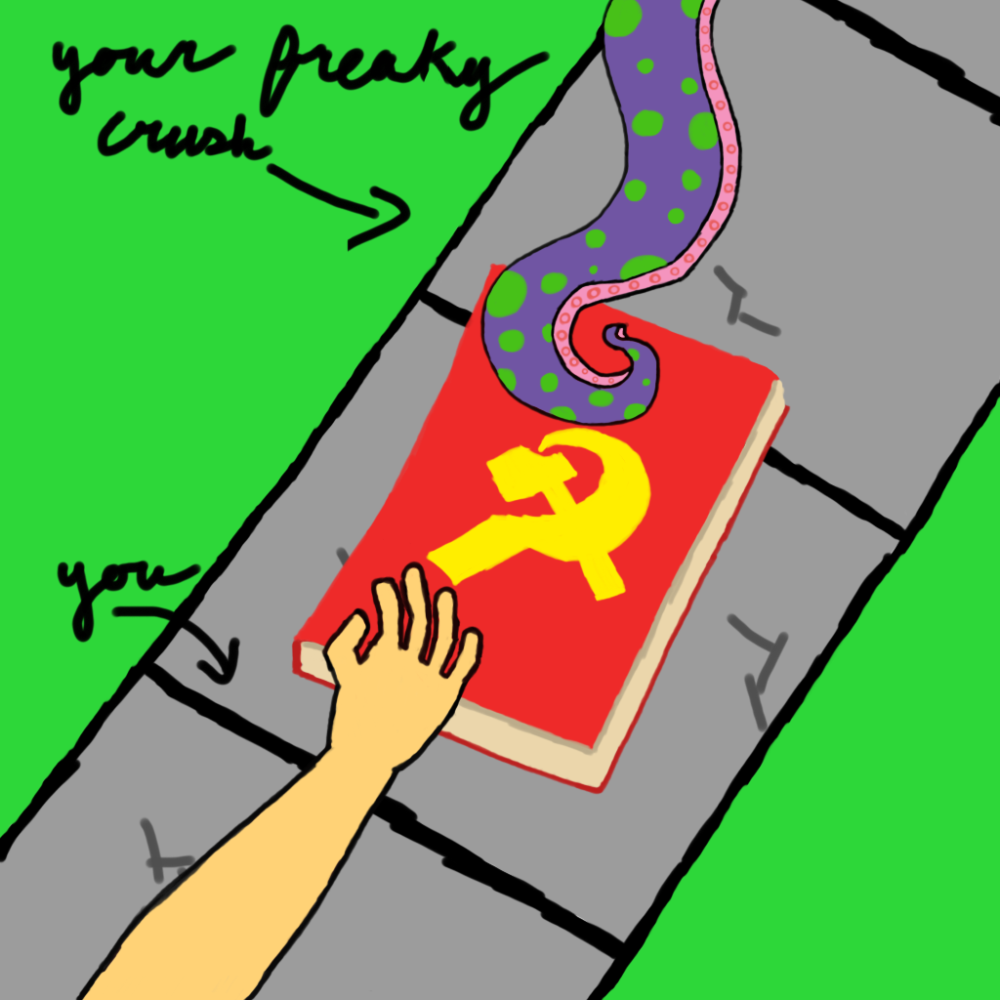

Out of all the things that can get a person "in the mood", there is one that stands above the rest and I think we can all agree on this one: Academic Honesty (followed closely by research capability). Here's how to become a sexy academic
1. Look For Readers
One thing that can "extend the rod", and by rod, well lets just say peanits. Is to become a reader. Scientist have revealed that looking at a book is a great way to increase research capacity. But don't look to excited: you're "The Structure of Scientific Revolutions 3rd Edition" is hot, but dont look too desprite! Try reading a line or two, then writing about it. Try reading a line or two, then writing about it again. Try reading a line or two, then again try writing about it. If you keeep doing this you'll surely stand out in the crowd of non-academics (unlike yourself)

2. Point The Book's Title Towards Them
We all subconsiously turn the face of a book away from us while reading because that's how books work you intellect deficient homunculus, but worry not, once you have that step down, the next is to make sure the title is pointed towards your peer of interest. Book choice also matters. Any scientific journal would work so long as it has a hard cover and it's title's font size is greater than 40pt (aditional points for golden colored text), but do avoid books for the masses such as "Atomic Habits", read those in your spare time to not be embarresed on the university grounds.
3. Point Your Pencil At Them
The more items (whether conected to your body or not) that are pointed towards them, the more likely you look like that super sexy researcher everyone dreams about. Pencils, rulers, arms (do not point anywhere above shoulder level), fingers, freaky people might use bare toes. Realistically the choice is yours so long as your pointing at least 3-5 things at them (including the book)
4. Dilate Your Pupils
A little known fact is that when you see someone you like, your pupils dialate (probably some chemical thing, we'll leave that to the neuro-chemists to fact-check). You dont want to make your peer of interest think that its because of them, because that seems to desprite, so you'll need a high-powered military flashlight and a dark room.
First you must stare into the flashlight for 5 seconds to around 1 minute, the choice is yours. Next walk into a really dark room, this theoretically should make your pupils dialate, but since you don't want to look desprite the darkness in the room should completely make your eyes invisible. The hard part is getting your love interest into the completely dark room and also meeting them there whilst following steps 1-3. For some street cred you can drop your "Herzberg atomic spectroscopy volume 1" in front of them -- they won't know what happened because of the blinding darkness but you sure will, and that's pretty sick my dude 🤙.
5. DO NOT SMILE!
You want to look like a normal, stable, human being, so to avoid sending mixed signals you must read your research papers/book with the largest frown imaginable. People expect you to smile when you do something you love, research is not very lovable. This will tell your person that you are a normal human who hates studying but pushes through. You can also try slaming your hands on desks, flipping tables, or the classic "shinji pose" (on the chair)
7. Say The Name Of Important Documents And References From Throughout History
This is a big one, so remember it! When talking to peer (who by now should be ripping their pants off), make sure to throw in the name of a few historical documents and references. Some classics:
- "This reminds me of the magna carta!" -- A Classic
- "Yeah! I actually read that in Meditations by Marcus Aurelius!" -- A Very Safe Play
- "What is this? Nazi Germany?" -- Implies A Certain Level Of Sexual Desire
- "Reminds me of the 15th rule of power: 'Crush your enemy totally'!" -- A Good Choice To Imply Dominance
- "♪ Conjunction junction what's your function ♪" -- Instant Sheet Shaker
Really linger over the sound of it. Draw it out. Use your most sultry, sexy, and husky voice
Same Examples From Before, But More Sexy
- "This reminds me of the magnaaa cartaaa -- I loveee taking power from the king in 1215"
- "Yas! I actually read that in Meditationssss by Marcus Aureliussss!"
- "What is thissss? Naziii Germanyyyy?"
- "Reminds me of the 15th rule of powerrrr: 'Crush your enemyyyy totallyyy'!"
- "♪ Conjunction junction what's your function ♪" -- This One Stays Unchanged Because Its Effective No Matter The Tone or Vibe Of The Conversation
8. Touch Them -- But Make It Look Like An Accident
Being the academic you are, you should have enough resources on you to find a reason for physical touch. My favorite is "throwing" my Communist Manifesto at the person, naturally they go to help you pick it up. This is where you slide your hands meet on the manifesto. And of course with your level of academic rigor they'll take notice.
"You also read the complete works of Carl Marx"
"Damn straight"
9. Congradulations! They Asked You Out
As long as your not at Arizona State University, the success rate is nearly 100%
And if by now you haven't had success, you will likely need a new major -- might I recommend politics?